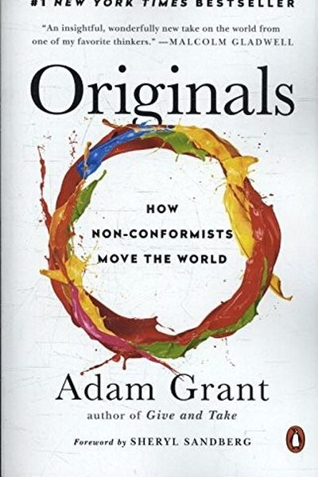

Library › Creativity
Originals — Summary & Key Lessons

How non-conformists move the world — the surprising science of original thinking from the Wharton professor.
📖 OPEN THE FULL INTERACTIVE BREAKDOWN →🌐 Read it in Hindi, Hinglish, Gujarati, Tamil & 22 more languages — free, with audio.
💡 The Big Idea
Adam Grant — the youngest tenured professor at Wharton — studied how originals (people who champion new ideas) think, decide and win. The findings are counterintuitive: the most original people are often chronic procrastinators, they doubt themselves, they're risk-averse in their careers while taking bold creative risks, and they generate mountains of bad ideas to find the good ones. Originality, Grant shows, is a learnable habit — not a birthright.
🧠 The 6 Key Lessons
Lesson 1: Procrastination Can Make You More Original
Creative Destruction
Grant's research shows a curved relationship between procrastination and creativity: moderate procrastinators generate more original ideas than both chronic dawdlers and instant finishers. Procrastinating gives your mind time to diverge — you keep exploring possibilities instead of locking in the first answer.
📖 Example: Martin Luther King Jr.'s 'I Have a Dream' speech — drafted the night before — was largely improvised on stage, after years of simmering on the same themes. Da Vinci, meanwhile, spent years 'wasting time' on other projects before completing the Mona Lisa. Read the full example →
⚡ Do this: When a project lands, don't start writing immediately. Spend 48 hours collecting possibilities first — then begin.
Lesson 2: Quantity Is the Road to Quality
Creative Destruction
Originality is a numbers game. Grant's studies of creators across fields — composers, scientists, entrepreneurs — find the same pattern: the most original people produce the most output overall, including the most failures. You can't have a great idea without first having many ideas, most of them mediocre.
📖 Example: Beethoven produced 650 works but is remembered for a handful; Picasso made over 50,000 pieces. Grant cites studies of 15,000 scientific papers and thousands of films: the most celebrated creators weren't the most consistent — they were the most prolific. Read the full example →
⚡ Do this: Set a volume goal, not a quality goal: 10 ideas this week, 3 drafts, 1 published. Judge yourself on the count.
Lesson 3: Doubt Your Ideas, Not Yourself
The Enemy of Originality
There are two kinds of doubt: self-doubt, which paralyzes, and idea-doubt, which fuels improvement. Originals doubt their ideas constantly — 'is this good enough?' — while trusting their capacity to make them better. First ideas are usually conventional; the originals' edge is willingness to revise.
📖 Example: Grant studied entrepreneurs who pivoted: the founders of Warby Parker spent months doubting and testing their first concept (home try-on kits were mocked in-house) before it became a billion-dollar company. Idea-doubt drove every improvement. Read the full example →
⚡ Do this: When you doubt, make the doubt specific: 'This draft's middle is weak' — then fix the middle. Never let it become 'I'm weak.'
Lesson 4: Take Creative Risks, Hedge Your Career
Venture and Veto
The stereotype says originals are fearless risk-takers. Research says the opposite: originals are often risk-averse in their day jobs, keeping a 'stable base' that lets them take bold creative swings on the side. When you feel secure, you can afford to be original.
📖 Example: Warby Parker's founders kept their consulting jobs while starting the company; one of the founders of the billion-dollar firm Bridgewater... (Grant cites entrepreneurs who launched ventures while employed, and scientists who made breakthroughs while holding… Read the full example →
⚡ Do this: Keep your stable base for now. Spend your creative risk budget on one side project with no downside beyond time.
Lesson 5: Speak Up the Right Way
Rebel with a Cause
Originals don't just have good ideas — they sell them. Grant's research on voice at work: the most persuasive challengers frame their critiques as concerns about the team, build coalitions before speaking, and stay persistent. Timing matters: presenting an unconventional idea when the room is calm and supportive beats ambushing a busy boss.
📖 Example: Grant studied a Wharton student who killed a flawed school policy not by rage but by collecting data, recruiting allies across departments, and presenting the case calmly — a textbook original: idea + coalition + persistence. Read the full example →
⚡ Do this: Before raising your next contrarian point, recruit one ally, gather one piece of evidence, and pick a calm moment.
Lesson 6: The Best Ideas Are Usually Late to the Party
Chapter 3: Originals Procrastinate
Grant shows that original thinkers often procrastinate strategically: starting early, working slowly, and letting ideas incubate while doing other things. Quick action is for execution; slow ignition is for invention. The key is not laziness but maintaining an open mind long enough for the idea to evolve.
📖 Example: Martin Luther King Jr.'s famous 'I Have a Dream' line was improvised mid-speech after being drafted and reworked for days; the final version emerged only because he kept the speech unfinished until the stage. Premature closure kills originality. Read the full example →
⚡ Do this: For your next important idea, delay commitment by one week and deliberately collect alternatives before choosing.
✅ 5-Step Action Plan
- Give your next project 48 hours of 'divergent thinking' before starting.
- Set a volume goal — 10 ideas, 3 drafts, 1 shipped this week.
- Convert self-doubt into idea-doubt: name the flaw, fix the flaw.
- Keep your stable base; start one low-risk side project.
- Raise your next contrarian point with an ally and evidence, calmly.
⚠️ When This Doesn't Work
Grant's 'originals change the world' is the best creativity book for non-artists — and Napoleon's Egypt campaign is the cautionary tale: the most original expedition of the 19th century — scientists, artists, a bold vision of Eastern conquest — launched with total originality and collapsed in logistics, disease and a British fleet, because originality without supply lines is just audacity. Grant's originals win when the idea is paired with execution; Napoleon's Egypt proves the pairing is everything. Be original about the idea; be conventional about the supply chain.
💀 The Graveyard Proves It
🐫 Napoleon's Egypt Campaign — Conquered the Pyramids, Lost the Fleet, Abandoned the Army. Burn: An army, a fleet, and the plan. Read the full case study →
💬 Best Quotes from Originals
- “Originality is taking the road less traveled, championing a set of novel ideas that go against the grain but ultimately make things better.”
- “The greatest originals are the ones who fail the most, because they're the ones who try the most.”
- “Having a sense of security in one realm gives us the freedom to be original in another.”
Interactive version: mark lessons as read, listen in your language, share quote cards.